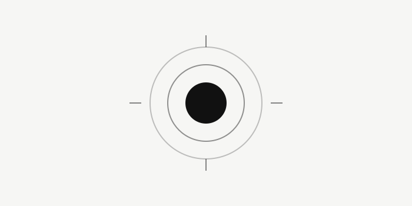

Cuando la ansiedad sube, no necesitas pensar más. Necesitas respirar diferente.

Qué está pasando en tu cuerpo ahora
La ansiedad no es solo mental. Es una activación del sistema nervioso simpático: corazón acelerado, respiración corta y alta (pecho), mandíbula tensa, manos frías. Tu cuerpo cree que hay peligro aunque tu cabeza sepa que no.
La respiración es el único interruptor voluntario que tienes para decirle al cerebro "estoy a salvo". Si cambias cómo respiras, cambias cómo te sientes en 90 segundos.
Por qué funciona la exhalación larga (fisiología simple)
Al alargar la exhalación activas el nervio vago y el sistema parasimpático. Baja el ritmo cardíaco, baja el cortisol y aumenta la sensación de control. No es placebo. Es el freno de tu sistema nervioso.
Regla: Inhalación corta = activación. Exhalación larga = calma. Para ansiedad, la exhalación siempre más larga que la inhalación.
Protocolo 4-7-8 de Rescate (Respira Coaching) - 3 minutos
Úsalo cuando notes el pico: pecho apretado, pensamientos acelerados, ganas de escapar.
- Inhala 4 seg por nariz llevando el aire a las costillas, no al pecho. Lengua en el paladar, hombros quietos.
- Retén 7 seg sin tensión. Si 7 te agobia, retén 2-3 seg. No fuerces.
- Exhala 8 seg por boca como si empañaras un cristal, lento, continuo, con sonido suave "ffff".
- Repite 4 ciclos. 3 minutos totales. Al 4º ciclo, nota: ¿dónde bajó la tensión?
Errores que aumentan la ansiedad
- Respirar por el pecho levantando hombros.
- Forzar la retención hasta marearte.
- Hacer respiraciones muy profundas y rápidas (hiperventilas).
- Usar la técnica solo en pánico. Si no la practicas en calma, no te sale en tormenta.
Entrenamiento de 7 días
Para que te funcione cuando la necesites de verdad:
Pon una alarma a las 15:00 durante 7 días. Cuando suene, 4 ciclos de 4-2-6, estés bien o no. Estás entrenando a tu sistema nervioso para que sepa volver a la calma. La ansiedad no se quita, se entrena la salida.
Cuándo no es suficiente solo con respirar
Si tienes ataques frecuentes, evitas situaciones, duermes menos de 6h y llevas semanas así, la respiración es una muleta muy buena, pero no es terapia. Busca ayuda profesional. Esto es educación, no sustituye diagnóstico.
¿Quieres el audio guiado? Lo tienes en la guía Respira sin Ansiedad, con temporizador y versiones cortas para picos.